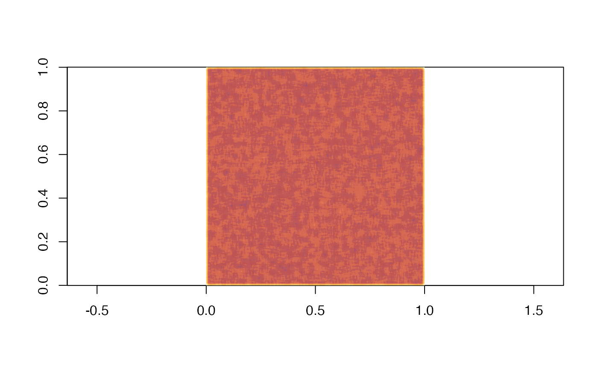
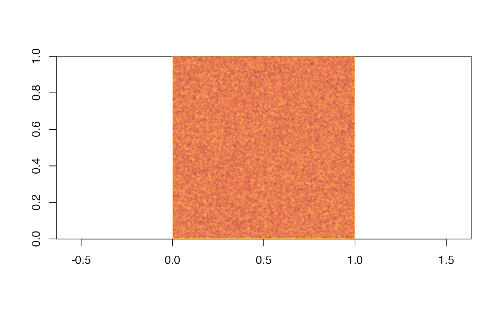

Moving window calculations are common in many fields, from image processing to raster data manipulation. This package provides functions to create and apply discretized convolution kernels to rectangular data (matrix, raster). The calculations are implemented in parallel to reduce processing time, providing a fast alternative to existing single thread implementations of focal moving window methods.
Let’s start with a simple 1000 by 1000 square matrix.
size <- 1000
data <- matrix(nrow = size, ncol = size,
data = runif(n = size*size, min = 0, max = 10))
image(data, asp = 1)The package contains two types of functions: kernel generation functions and kernel application functions. With the package’s kernel generation functions, it is easy to create distance, exponential, circular as well as Gaussian discretized kernels, returned in matrix form. Here we generate a Chebyshev distance kernel and show its shape.
kernel <- chebyshev_distance_kernel(10)
image(kernel, asp = 1)The second type of function in the package, kernel applications functions, apply a kernel to a matrix, raster object or terra object (although the most efficient approach is to pass a matrix to the function). The main application function is pfocal.

The pfocal function is not as flexible as other existing focal calculation functions which can accommodate any functional treatment of the values covered by the kernel (for example raster::focal can take on any R function). However, it is optimized for a few common combinations of “transform” and “reduce” functions. The transform function dictates how the values d covered by the kernel k are treated with regard to the focal cell. To get the list of possible transform functions:
pfocal_info_transform()
#> [,1] [,2]
#> [1,] "MULTIPLY" "0"
#> [2,] "ADD" "1"
#> [3,] "R_EXP" "2"
#> [4,] "L_EXP" "3"
#> [,3]
#> [1,] "For data value 'd' and kernal value 'k', intermediate_value = (d * k)"
#> [2,] "For data value 'd' and kernal value 'k', intermediate_value = (d + k)"
#> [3,] "For data value 'd' and kernal value 'k', intermediate_value = (d ^ k)"
#> [4,] "For data value 'd' and kernal value 'k', intermediate_value = (k ^ d)"The reduce function, on the other hand, dictates how the transformed values are reduced, with the most common option being sum, product, minimum and maximum. See the list of reduce functions:
pfocal_info_reduce()
#> [,1] [,2]
#> [1,] "SUM" "0"
#> [2,] "ABS_SUM" "1"
#> [3,] "PRODUCT" "2"
#> [4,] "ABS_PRODUCT" "3"
#> [5,] "MIN" "4"
#> [6,] "MAX" "5"
#> [,3]
#> [1,] "Accumulator starts at 0. For each intermediate value, in no particular order, acc = ( acc + iv )"
#> [2,] "Accumulator starts at 0. For each intermediate value, in no particular order, acc = ( acc + abs(iv) )"
#> [3,] "Accumulator starts at 1. For each intermediate value, in no particular order, acc = ( acc * iv )"
#> [4,] "Accumulator starts at 1. For each intermediate value, in no particular order, acc = ( acc * abs(iv) )"
#> [5,] "Accumulator starts at the highest possible value. For each intermediate value, in no particular order, acc = min( acc , iv )"
#> [6,] "Accumulator starts at the lowest possible value. For each intermediate value, in no particular order, acc = max( acc , iv )"Finally, there is the option of dividing the final result (a method for scaling). The default is no division. The different options can be seen with:
pfocal_info_mean_divisor()
#> [,1] [,2]
#> [1,] "ONE" "0"
#> [2,] "KERNEL_SIZE" "1"
#> [3,] "KERNEL_COUNT" "2"
#> [4,] "KERNEL_SUM" "3"
#> [5,] "KERNEL_ABS_SUM" "4"
#> [6,] "KERNEL_PROD" "5"
#> [7,] "KERNEL_ABS_PROD" "6"
#> [8,] "DYNAMIC_COUNT" "7"
#> [9,] "DYNAMIC_SUM" "8"
#> [10,] "DYNAMIC_ABS_SUM" "9"
#> [11,] "DYNAMIC_PROD" "10"
#> [12,] "DYNAMIC_ABS_PROD" "11"
#> [13,] "DYNAMIC_DATA_SUM" "12"
#> [14,] "DYNAMIC_DATA_ABS_SUM" "13"
#> [15,] "DYNAMIC_DATA_PROD" "14"
#> [16,] "DYNAMIC_DATA_ABS_PROD" "15"
#> [,3]
#> [1,] "Does not divide the final value by anything"
#> [2,] "Divide the final value at each point by nrow(k)*ncol(k)"
#> [3,] "Divide the final value at each point by sum(+!is.na(k))"
#> [4,] "Divide the final value at each point by sum(k[!is.na(k)])"
#> [5,] "Divide the final value at each point by sum(abs(k[!is.na(k)]))"
#> [6,] "Divide the final value at each point by prod(k[!is.na(k)])"
#> [7,] "Divide the final value at each point by prod(abs(k[!is.na(k)]))"
#> [8,] "Divide the final value at each point by sum(!is.na( intermediate_data )), recalculated at every point"
#> [9,] "Divide the final value at each point by sum(intermediate_data[!is.na( intermediate_data )]), recalculated at every point"
#> [10,] "Divide the final value at each point by sum(abs(intermediate_data[!is.na( intermediate_data )])), recalculated at every point"
#> [11,] "Divide the final value at each point by prod(intermediate_data[!is.na( intermediate_data )]), recalculated at every point"
#> [12,] "Divide the final value at each point by prod(abs(intermediate_data[!is.na( intermediate_data )])), recalculated at every point"
#> [13,] "Divide the final value at each point by sum(local_data[!is.na( intermediate_data )]), recalculated at every point"
#> [14,] "Divide the final value at each point by sum(abs(local_data[!is.na( intermediate_data )])), recalculated at every point"
#> [15,] "Divide the final value at each point by prod(local_data[!is.na( intermediate_data )]), recalculated at every point"
#> [16,] "Divide the final value at each point by prod(abs(local_data[!is.na( intermediate_data )])), recalculated at every point"Other kernel applications are available in the package, bearing the pfocal_fast, and wrapping pfocal as a shortcut to some default arguments.
fast_convoluted <- pfocal_fast_abs_rectangle(data = data, height = 10, width = 10)
image(fast_convoluted, asp = 1)
To compare with raster::focal, we will make use of the raster and microbenchmark packages:
library(raster)
#> Loading required package: sp
library(microbenchmark)We will run the functions 100 times on the same data grid above. We show here how the mean() function can be replicated in pfocal.
data_raster <- raster::raster(data)
mbm <- microbenchmark(
"pfocal" = {
pfocal_results <- pfocal::pfocal(data = data_raster, kernel = kernel,
transform_function = "MULTIPLY",
reduce_function = "SUM",
mean_divider = "KERNEL_COUNT")
gc()
},
"raster_focal" = {
raster_focal_results <- raster::focal(x = data_raster, w = kernel,
fun = mean, pad = TRUE, padValue = 0)
gc()
},
times = 100,
unit = "s")
mbm
#> Unit: seconds
#> expr min lq mean median uq max neval
#> pfocal 0.5498404 0.5558339 0.5627698 0.5589692 0.5651258 0.626185 100
#> raster_focal 0.7848192 0.8120337 0.8282878 0.8258618 0.8389689 1.094305 100
plot(mbm)